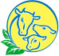
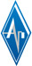

Наши преимущества
-
Золотые кадры
Накапливая большой опыт работы, постоянно проходя обучение и аттестацию у поставщиков оборудования, наши сотрудники становятся специалистами высокого уровня. За это мы любим и бережем наши кадры.
-
Профессиональный контроль
Мы одна из немногих компаний на рынке, кто профессионально занимается системами контроля топлива. В том числе и наиболее сложными в установке и настройке датчиками расхода топлива.
-
Спецтранспорт и оборудование
Все работы, особенно по установке и настройке систем контроля топлива, производятся на спецоборудовании, которым оснащены наши передвижные мастерские.
-
Расширенная гарантия
Мы предоставляем бессрочную гарантию на бортовые контроллеры АвтоГРАФ любой модификации на весь срок действия договора.
Передвижные мастерские
Простой установки датчиков уровня или расхода топлива недостаточно. Кроме этого необходима их точная настройка при безупречном соблюдении технологии. Этого нельзя добиться без соответствующего специального оборудования. Например, перед установкой датчика уровня топлива необходимо откачать само топливо из бака. Для этого наши передвижные мастерские оснащены специальной емкостью для откачки топлива и заказчику не надо ломать голову над тем, куда временно деть 500 литров дизтоплива.
Еще пример: для осуществления процедуры тарировки необходимо заливать топливо обратно в бак, уже оснащенный датчиком, точно отмеренными порциями. Для этого многие компании используют простые канистры, но, как вы понимаете, это не обеспечит должной точности выполнения всей процедуры. Мы пользуемся поверенным мерником с системой контроля температуры топлива, который дополнительно калибруется перед каждой процедурой.
Иными словами, если вы хотите чтобы установка систем контроля топлива на вашем предприятии происходила «под ключ», без траты лишнего времени и ваших нервов, то наличие специального оборудования — это не роскошь, а необходимость.
Гарантийное и негарантийное обслуживание
Недостаточно просто внедрить на своем предприятии системы контроля топлива или спутникового мониторинга транспорта. Самое важное — это обеспечить их бесперебойную работу. И абонентское обслуживание играет в этом ключевую роль. Ежемесячная абонентская плата включает в себя:
- безлимитный gps-трафик;
- неограниченное место под хранение ваших данных на нашем сервере;
- удаленная техническая поддержка, когда возникшая проблема не требует выезда на место;
- своевременное обновление ПО и обучение персонала работе с ним;
- демонтаж/монтаж системы «АвтоГРАФ» с одного ТС на другое, например, в случае его продажи.
Приятный дополнительный бонус — выезд по негарантийным случаям в пределах Московского Малого Кольца мы осуществляем бесплатно.
Кроме этого, мы предоставляем бессрочную гарантию на всю продукцию «АвтоГРАФ»в течении всего срока абонентского обслуживания, хотя заводская гаантия ограничивается всего 1 годом.
О компании
Компания «СОРАС» основана в 2008 году и специализируется на установке систем контроля топлива, а также внедрении и обслуживании систем спутникового GPS/ГЛОНАСС мониторинга транспорта «АвтоГРАФ».
Компания «СОРАС» является официальным представителем группы компаний «ТехноКом» на территории Москвы и Московской области.
Наша миссия — повышение эффективности управления бизнесом у наших заказчиков. Это включает в себя не только снижение расходов, а значит и повышение прибыли, но и эффективное управление автопарком, снижение простоев техники и затрат на ремонт. Предлагаемые нами решения затрагивают не только техническую сторону вашего бизнеса, но и человеческий фактор — внедрение систем мониторинга транспорта и контроля топлива повышают дисциплину вашего коллектива и ответственность сотрудников перед компанией.
При этом окупаемость внедряемых решений в среднем составляет всего 2–3 месяца, а сокращение издержек после внедрения может достигать 30-40%.
Наши принципы просты — мы стремимся к безупречности нашей работы в каждом ее аспекте, от постоянного совершенствования нашего оборудования до роста квалификации наших специалистов.
Сертификаты


Наши клиенты
-
Дмитровский молочный заводПроизводство продуктов питания
- СУ-155Строительство
-
Алькор-группРазмещение, производство рекламы
- Дмитровский молочный заводПроизводство продуктов питания
- СУ-155Строительство
- Алькор-группРазмещение, производство рекламы
- Алькор-группРазмещение, производство рекламы
- Дмитровский молочный заводПроизводство продуктов питания
- Дмитровский молочный заводПроизводство продуктов питания
- Алькор-группРазмещение, производство рекламы
- СУ-155Строительство